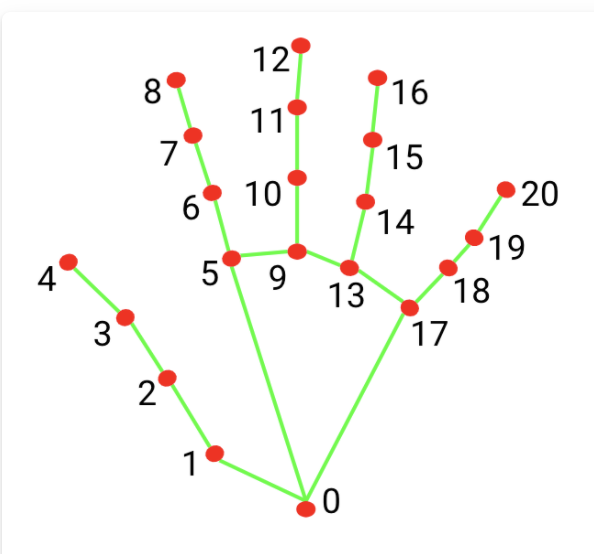

XY-area 1
XY-area 2
| Total |
AudioPipe is an implementation of MediaPipe for WebAudioXML. I was inspired by the great idea from Handmate-MIDI to control audio data with the fantastic MediaPipe library. AudioPipe is an online, fully programmable, gesture controlled musical instrument. You can play with the presets or edit the code and make your own sound synthesis and mappings. Please read the documentation for WebAudioXML to take advantage of all the possibilities.
The image below indicates the 21 available points for each hand. In WebAudioXML all those variables can be mapped to any audio parameter using the <var>-element. Please not that all variable names shall be prefixed with a dollar sign. The naming convention for the variables follow the following scheme:
Position on the axis (0 - 1) for each point on each hand:
- hand_l0x
- hand_l0y
- hand_l1x
- etc...to hand_l21y
- hand_r0x
- hand_r0y
- hand_r1x
- etc...to hand_r21y
Example:
<var name="f" value="$hand_r8y" mapin="0,1" mapout="100,1000"></var>
<OscillatorNode frequency="$f"></OscillatorNode>
Distance (0 - 1) between each point and all other points
- hand_r4tor8 (distance between the pointing finger and the thumb on the right hand)
- hand_l8tor8 (distance between the two pointing fingers)
Example:
<var name="f" value="$hand_r8tor4" mapin="0,1" mapout="100,1000"></var>
<OscillatorNode frequency="$f"></OscillatorNode>
Events
Events can trigger Envelopes and AudioFiles using trig="[eventName]" and/or release="[eventName]". Please note event names are NOT prefixed with dollar sign.
- trig="hand_r4tor8" (right hand pointing finger and thumb are touching each other)
- release="hand_r4tor8" (right hand pointing finger and thumb are releasing each other)
Example:
<OscillatorNode frequency="440"></OscillatorNode>
<GainNode><gain>
<Envelope start="hand_r4tor4" max="1" ADSR="10,100,20,50"></Envelope>
</gain></GainNode>

AudioPipe is part of a reasearch project at the Royal College of Music and Royal Institute of Technology in Stockholm by Hans Lindetorp. Please follow my blog at hans.arapoviclindetorp.se/